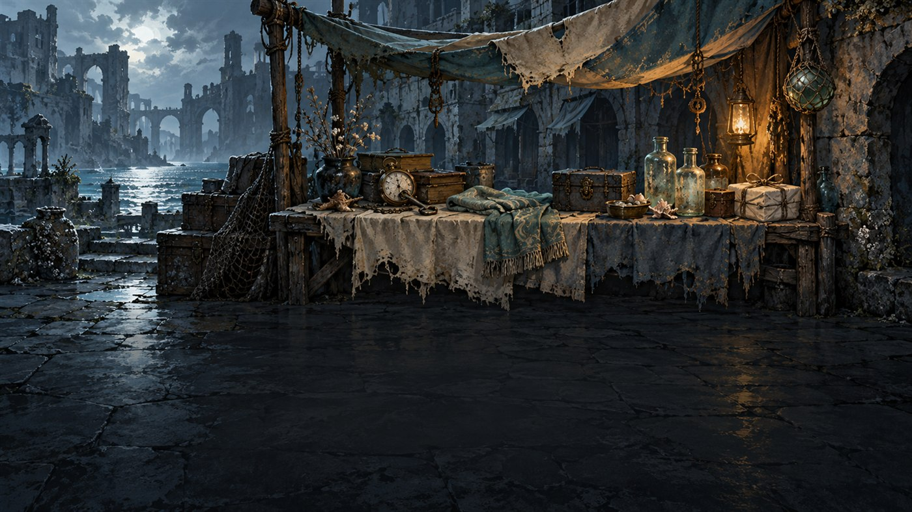

The vendor stall
Reference for the shop screen: the painted stall, the shopkeeper, and how the screen looks in the game right now. Click an image to see it larger.




Reference
Files
art/layers/screens/vendor/bg.png and keeper.png. Drawn by run/vendor_scene.gd (VendorScene), added behind the panel by run.gd. The keeper prompt is in art/CHATGPT_VENDOR_BRIEF.md; the design notes are in docs/VENDOR_ART_DESIGN.md.
What the screen holds
A greeting banner, three card offers with prices, one relic offer with Buy relic, and three service buttons: Remove a card (15 gold), Heal 12 HP (12 gold) and Leave. Card prices are 10, 16 or 24 gold, and a relic costs about 75.
How the stall follows the panel
The stall reads head_anchor, counter_anchor and service_anchors every frame, so it tracks the panel. Each service button gets a small code-drawn prop beside it: a ticket punch, a medicine bottle and a case. The till, bell, dust motes and the lantern flicker are also drawn in code.
Debug launch
.\scripts\debug_fight.ps1 -Screen vendor opens the first shop with 100 gold and the player at 55% HP; add -Character, -Gold and -Hp, or vendor:2 for the second shop. Nothing is saved.